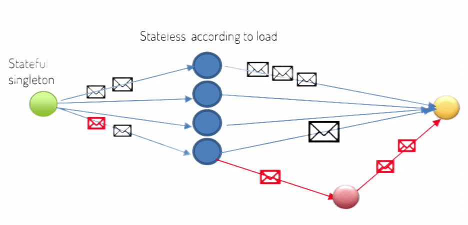

While Batch processing is need for some cases, such as gathering and data enrichment, there are other cases where the data is generated continuously, which typically send in the data records simultaneously. Streaming data includes a wide variety of data such as log files generated by customers using your mobile or web applications, eCommerce purchases, in-game player activity, information from social networks, financial trading floors, or geospatial services telemetry from connected devices or instrumentation in data centers.
HKube's data streaming is an extension to hkube batch processing pipeline architecture that handles millions of events at scale,
In real-time. As a result, you can collect, analyze, and store large amounts of information.
That capability allows for applications, analytics, and reporting in real-time.

So where are hkube data streams good for? we can take a look on stream from Twitter as an example on this particular case we want to enrich the data from other resources for example Facebook or Linkedin and other internal databases before saving it
Hkube streaming pipeline supports :
hkube as its own data transportation which allows sending data directly between nodes in that way we can ensure the follows
The throughput of streaming can be varied over time so we will able to handle bursts and also free
resources for other jobs in case it's not needed.
With its own unique heuristic system hkube is able to recognize changes in throughput and to act pretty fast to support the needs.
To understand it lets look at a scenario the demonstrate how hkube handle pressures
On streaming data in the majority of the time, we want that the data will move on a specific flow but there are scenarios when we want to change the flow dynamically. To understand it let take the twitter use case for example, in the majority of the cases we just want to enrich the data with more data from other resources but for example, in case that we cant recognize the post writer for some reason we want to create other prerequisites before the enrichment. Hkube helps you to handle that situation with conditional data flow we will explain later how to create and work with this feature
{ "streaming": { "flows": { "analyze": "sort>>A", "master": "twitt >>sort>>B" }, "defaultFlow": "master" } }
registerInputListener(onMessage=handleMessage)
Used only within a stateful algorithm. registerInputListener allows registering a method written by the algorithm implementor, which will be invoked upon each message that arrives.
The onMessage signature is onMessage(msg, origin) where the origin is the name of the previous node.
startMessageListening()